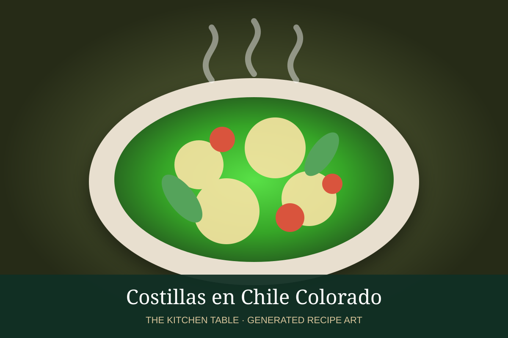

← Back to all recipes
PORK · MEXICAN
Costillas en Chile Colorado
Pork ribs braised until tender in a smooth red chile sauce of guajillo, ancho, garlic, cumin, and oregano.
2 hr 30 minServes 6

Photo: Isabel Eats
Ingredients
- 3 lb pork ribs, cut into portions
- 5 guajillo chiles
- 3 ancho chiles
- 3 garlic cloves
- 1/2 white onion
- 1 tsp cumin
- 1 tsp oregano
- 2 tbsp neutral oil
- 3 cups pork or chicken stock
- Salt and black pepper
Preparation
- Toast and soak chiles until soft.
- Blend chiles with garlic, onion, cumin, oregano, salt, and some stock until smooth; strain.
- Brown ribs in oil and remove.
- Fry chile sauce in the same pot for 5 minutes.
- Return ribs, add remaining stock, cover, and simmer gently until very tender.
- Reduce sauce uncovered if needed and adjust seasoning.